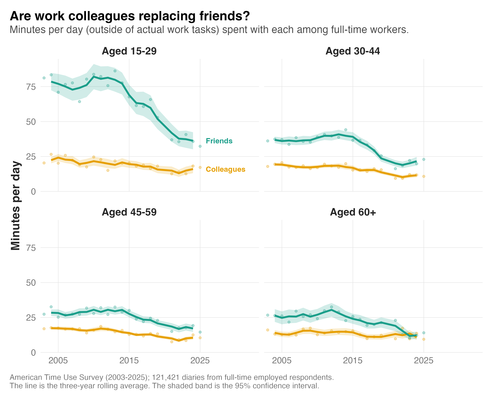

There has been a lot of talk in recent years about a "friendship recession". In 2021, the Survey Center on American Life found that 12 per cent of Americans had no close friends. And many of us spend more waking hours with the people we work with than with anyone else.
So are work colleagues replacing friends?
To find out, I used 121,421 diaries from full-time workers in the American Time Use Survey, collected between 2003 and 2025. Each person records everything they did over a single day, and who was with them during each activity. I added up the minutes spent with friends and the minutes spent with colleagues, outside of actual work tasks.
The figure below shows how both have changed for four age groups.

Here's what I found:
1) During this period, time with friends has roughly halved. Between 2003 and 2007, full-time workers spent about 42 minutes a day with friends. By 2021 to 2025, it was about 22 minutes. The fall shows up in every age group, and it started around 2014, well before the pandemic.
2) Young workers lost the most. Full-time workers under 30 spent about 78 minutes a day with friends in 2003-07 and about 36 minutes in 2021-25.
3) Colleagues have not filled the gap. Time with colleagues outside of work tasks fell too, from about 19 minutes a day to about 11. Workers over 60 now spend about as much time with colleagues as with friends, but that is because time with friends has dropped, not because time with colleagues has increased.
So time spent with friends is decreasing. And at least in terms of time spent together, colleagues are not replacing friends.